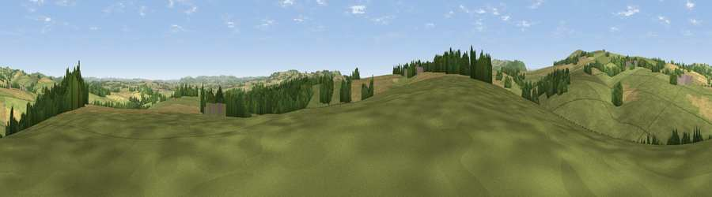

Viewpoint near Garway
#26924 in England · top 66% of its area beats it · near GarwayThe view, rendered

A 360° render of this exact spot computed from the terrain model, tree cover and land cover — summer colours, afternoon light, calibrated against photographs of famous viewpoints. Real trees, hedges and buildings will differ in detail.
The panorama
Grey silhouette: terrain skyline in each direction (720 bearings, Earth curvature and refraction included). Dashed green: skyline with trees (+15 m) and buildings (+8 m) as obstacles. Blue strip: how far the ground is visible on each bearing.
Where the view opens
Wedge length = distance to the farthest visible ground on that bearing (vegetation-aware). Rings at 10, 25 and 50 km.
What fills the view
62% grassland · 23% cropland · 14% woodland ·
Angular shares of the visible panorama (visual magnitude), not map area. Landscape diversity 0.41 (0–1 Shannon).
Key numbers
More beautiful places nearby
The staircase of upgrades: each row has a higher view potential than everything closer. Driving times are estimates from straight-line distance, calibrated against real road routing — check an actual route before setting out.
| Place | Direction | Drive | Score |
|---|---|---|---|
| Viewpoint near Garway | WNW · 3 km | ~6 min | 75.5 |
| Garway Hill | WNW · 4 km | ~9 min | 84.6 |
| Millennium Hill | ENE · 33 km | ~51 min | 86.9 |
| Worcestershire Beacon | NE · 37 km | ~55 min | 87.1 |
| Viewpoint near West Quantoxhead | SSW · 88 km | ~113 min | 87.9 |
| Viewpoint near West Quantoxhead | SSW · 89 km | ~113 min | 88.7 |
| Holdstone Hill | SW · 114 km | ~138 min | 90.2 |
| The Knoll | S · 136 km | ~160 min | 91.0 |
51.90776, -2.76711 · source: screening · position refined by local search. Computed location — check access rights before visiting.